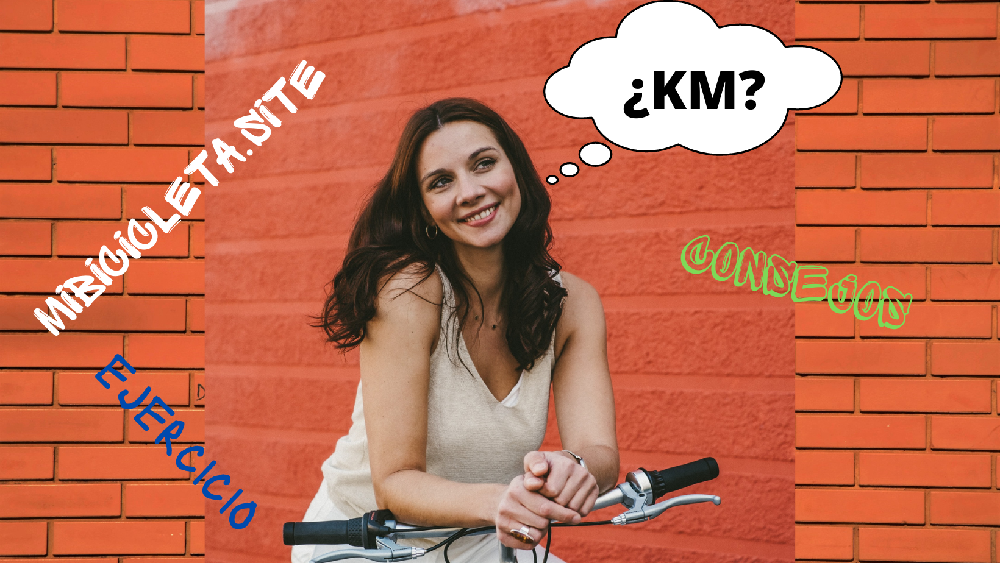

¿Cuantos kilometros debo andar en bicicleta para estar en forma?
Compra tu primer bicicleta de montaña aquí.

Tabla de contenidos
- El objetivo
- ¿Cuánto tiempo llevas haciendo ciclismo?
- ¿Dónde estás haciendo ciclismo?
- Algunos consejos útiles
El ciclismo no es sólo un hobbie. En general, los ciclistas (por no decir todos) tienen objetivos que quieren alcanzar con la bicicleta, que pueden reducirse y convertirse en un lugar ideal para esconderse y cultivar un bello entorno. Independientemente de lo que quieras hacer, es importante un plan. El plan debe incluir el kilometraje que recorres cada día. Esto te ayudará a organizar el tiempo de conducción y el día a día, y aprovecha lo mejor para que te mantengas fiel a ese viaje.
A continuación te mostraremos los factores a considerar y te darán una idea de los kilómetros necesarios para ti.
Puedes comprar tus guantes para bicicleta aquí.El objetivo
Las personas que quieren mantenerse en forma no tienen que recorrer muchos kilómetros al día, mientras que los ciclistas que se entrenan para un triatlón tendrán que esforzarse más, y las personas que quieren perder peso deben recorrer una distancia, lo que les costará una determinada cantidad de calorías.
La regla general del ciclismo es recorrer distancias cortas con regularidad. Los expertos recomiendan que los adultos hagan ejercicio 30 minutos al día y los niños 60 minutos. El ciclista medio recorre entre 15 y 20 km por hora a una velocidad moderada. Por lo tanto, supongamos que no hace cualquier otra actividad deportiva, entonces, puede iniciar con unos 8 kilómetros al día.
Se recomienda combinar el ciclismo con otros métodos de ejercicio, de modo que pueda recorrer menos kilómetros, por ejemplo, sólo 8 kilómetros al día, y luego comenzar a trabajar más duro o distancias más largas, asegúrate de no comenzar a ser más suave con tu ejercicio, Será un reto que no será bueno, y en algunos casos, su progreso será revertido.
Los entrenamientos de ciclismo organizados (como los 100 km de recorrido o cualquier otra carrera) requieren más trabajo. Debes estar totalmente preparado para este tipo de esfuerzo. Si no practicas demasiado el ciclismo, puedes empezar a partir de 15 km para intentar ejercitarte, este debe ser el punto de partida de tus esfuerzos diarios sin descanso.
Las salidas organizadas pueden ser muy largas. Toma como ejemplo una distancia de 100 kilómetros o más. Suponiendo que ya has empezado a prepararte, recorre un poco de más distancia todos los días. Cuanto más te acerques a los 100 kilómetros, mejor con 3-4 meses de antelación. Deberías montar una media de 30 kilómetros al día en el primer mes, 50 kilómetros al día en el segundo mes y 80 kilómetros en el último mes, para evitar el exceso no montes todos los días, descansa algunos, y otros días disminuye el kilometraje.
Una vez que haya calculado tus necesidades calóricas y cuántas calorías debes quemar a la semana, te resultará fácil perder peso practicando el ciclismo. Es decir, no hay kilómetros mágicos. Una persona que pesa 60 kg quema 30 calorías por kilómetro de media. A unos 18 kilómetros por hora, las personas más pesadas quemarán más. Para reducir eficazmente el peso en bicicleta, debe prestar más atención a la intensidad del paseo y al número de kilómetros.
lo que comes, tu estado de salud y tu edad son los factores que determinan cuántos kilómetros puedes o debes recorrer. Suponiendo que todo el mundo esté sano, una persona de 25 años puede recorrer fácilmente más kilómetros que una persona de 70 años, dependiendo de los detalles. En cuanto a la salud, lo mejor es que hables con tu médico. Las personas con enfermedades graves no deben esforzarse sin consultar al médico. Las consecuencias pueden ser graves.
¿Te interesa comprar un asiento para tu bici?¿Cuánto tiempo llevas haciendo ciclismo?
Los ciclistas experimentados y constantes recorren casi todos los días 100 kilómetros en bicicleta, pero si se monta en bicicleta de forma pausada en raras circunstancias, es mejor no intentarlo. Comenzando con el ciclismo ligero, 8 a 10 kilómetros son suficientes para los primeros días, si eres aficionado a la televisión, a partir de ahí es suficiente. Si crees que eres una persona sana, puedes empezar con 15 kilómetros e ir más allá, cuando te sientas cómodo. Es un pequeño secreto, cuanto más lejos montes, más te gustarás a ti mismo.
Mantente seguro. Comprar casco para bicicleta.¿Dónde estás haciendo ciclismo?
No se puede comparar la conducción de 50 kilómetros en un terreno accidentado con la conducción de 50 kilómetros en un terreno llano. Ir en bicicleta por carreteras accidentadas es definitivamente más difícil. Para las personas que no hacen ningún ejercicio, éste no es el mejor punto de partida. Recuerda prestar atención a la reacción del cuerpo.
Accesorios para bicicleta, mochilas, botellas de agua, luces, antireflejantes, gafas y mucho más.Algunos consejos útiles
No importa la potencia que tengas, ten cuidado de no hacerte daño. Algunos ciclistas se presionan demasiado y se pueden provocar vómitos. Esto es una buena señal de reducción de la fuerza.
Contar con el equipo adecuado para montar en bicicleta, los pantalones de montar son especialmente necesarios y más cómodos. Un pantalón corto informal puede servir, pero cuando empiece a practicar ciclismo de larga distancia, compre ropa adecuada.
El ciclismo de corta distancia 4 o 5 días a la semana es mejor que el de larga distancia uno o dos días a la semana, el ciclismo regular de corta duración es mejor que el de larga distancia.
Mantenga sus músculos activos durante toda la semana, combinando el ciclismo de larga distancia a una velocidad media con la carrera rápida de corta duración, ambas son buenas, y puedes intentar montar en todo tipo de terrenos.
Utilizar equipos como el pulsómetro.
La hidratación es crucial cuando se pisa el pedal. Puede que no veas mucho sudor, pero esto no es porque no estés sudando, sino porque el ejercicio a alta velocidad hace que el sudor se evapore más rápido.
No te adaptes a las distancias cómodas. Si pedaleas 10 kilómetros al día, nunca sabrás realmente hasta dónde puedes llegar, y el aumento de la dificultad es lo que lo hace interesante.
El ciclismo es una de las mejores formas de ejercicio físico, tiene muchos beneficios, y cuando montes en bicicleta, no olvides disfrutar del paisaje y la libertad.
¿Cuántos kilómetros debes recorrer cada día? A menos que su médico le diga, nadie puede realmente decirle el número exacto de kilómetros que debe hacer cada día, pero si usted usa el ciclismo solo para mantenerse saludable, puedes utilizar los consejos anteriores para encontrar la idea correcta para ti. Si estás perdiendo peso, entonces puede que necesites hacer algunas cuentas para obtener un número, o hacer algunos ejercicios de ciclismo desafiantes. Manténgase y lleve una vida saludable en el camino. En general, la clave es empezar desde un punto cómodo, y luego aumentar gradualmente la distancia y la intensidad, asegurándose de sudar cada vez y de aumentar el ritmo cardíaco.
Por último, disfruta de tu bicicleta.
Luces, pedales, asientos, herramientas, todo para que tu bicie este al 100.